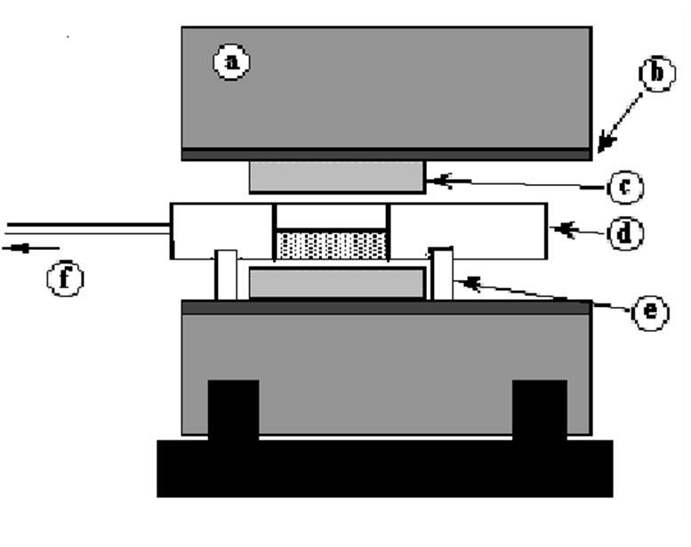
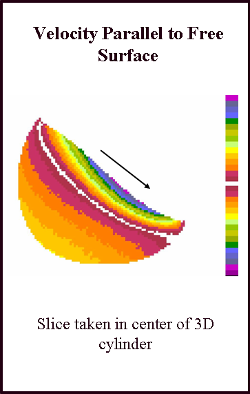

Using MRI to Study Granular Structure and Flow
|
 |
|
|
 |
Moving spins experience a linear velocity-dependant phase change. In other words, the intensity at a given point in our images, after the appropriate transformation, reflects the phase change at that point. We can then can use Eq. (1) to determine the velocities at every point wihtin the system. |

|
|
REFERENCES:
Altobelli, S.A., Caprihan, A., Fukushima, E., Seymour, J.D. Nuclear magnetic resonance studies of granular flows - Current status (2000) Materials Research Society Symposium - Proceedings, 627, pp. BB211-BB2110.
Fukushima, E. Nuclear magnetic resonance as a tool to study flow (1999) Annual Review of Fluid Mechanics, 31, pp. 95-123.
Yamane, K., Nakagawa, M., Altobelli, S.A., Tanaka, T., Tsuji, Y. Steady particulate flows in a horizontal rotating cylinder (1998) Physics of Fluids, 10 (6), pp. 1419-1427.
Altobelli, Stephen Allen, Caprihan, Arvind, Fukushima, Eiichi Nuclear magnetic resonance as a versatile technique to measure flow parameters (1997) American Society of Mechanical Engineers, Fluids Engineering Division (Publication) FED, 5.
Nakagawa, M., Altobelli, S.A., Caprihan, A., Fukushima, E., Jeong, E.-K. Non-invasive measurements of granular flows by magnetic resonance imaging (1993) Experiments in Fluids, 16 (1), pp. 54-60.
Nakagawa, M., Jeong, E.K. Application of NMR to rotating granular flow (1992) Proceedings of Engineering Mechanics, pp. 644-647.
Nakagawa, Masami, Caprihan, Arvind, Fukushima, Eiichi MRI of granular flows in a rotating cylinder (1992) American Society of Mechanical Engineers, Fluids Engineering Division (Publication) FED, 135, pp. 23-27.
This work was funded, in part, by USDOE, Pittsburgh Energy Technology Center via Contract #DE-AC22-90PC90184.